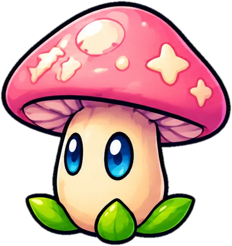

 Grass
Grass Light
LightTap a stage to read its story.
This Sporepuff wears a vivid pink-and-cream speckled cap with glowing blue eyes set wide in a little stem-face. Two curling leaf-sprouts grow from its sides like raised hands. It bounces energetically through the ghost hollow's shadows, and its pale cap catches the hollow's ambient glow and reflects it, making the area around it just a little bit brighter. Where other creatures are cautious in the ghost hollow, Sporepuff is delighted - it treats every shadow like a new discovery.
Field note: Sporepuff's cap brightens by 30% when someone nearby speaks a word it has never heard - its excitement is literally illuminating.
Ghost Hollow. Sporepuff and its family are found in the Ghost Hollow. See everyone who lives there.
Share a Bond Food that matches its types to become friends. Sporepuff loves:
A Bond Food is not a trick. It joins your spirit with the Kimuro's spirit, and only when it chooses you.
Print the Kimuro adventure packs: mazes, cards, a board game and Bond Mark medals.
See the printable packs